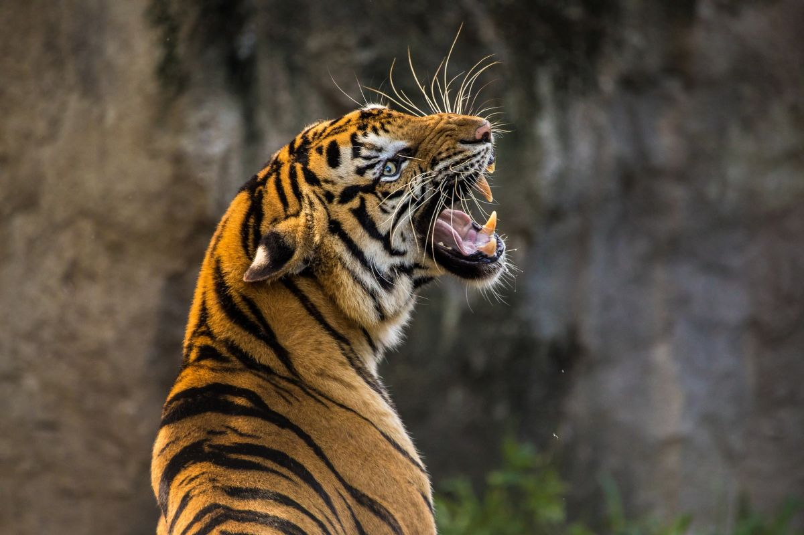
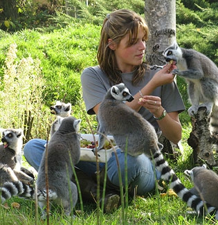
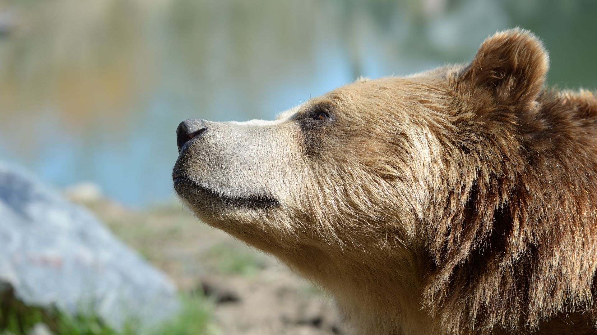
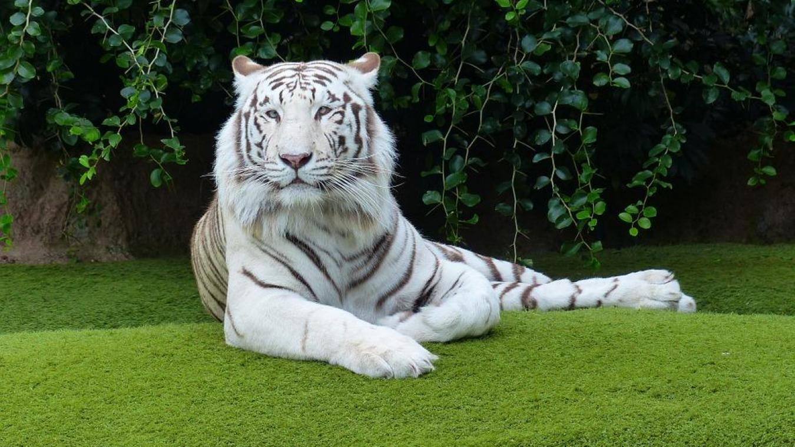
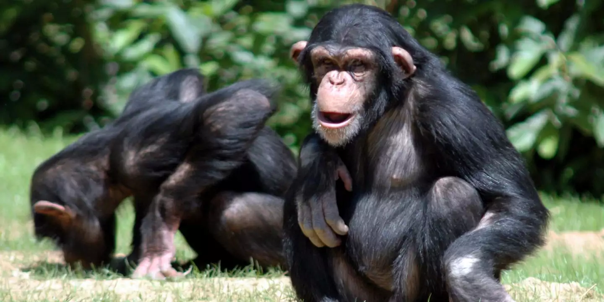
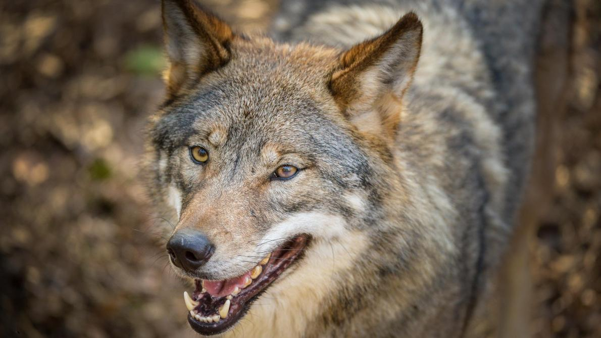

Bienvenue sur le site officiel du Zoo de Nanterre.
￮ Qui sommes nous ?
Nous sommes une équipe de 25 salariés actifs 24/24h pour vos animaux. Nos équipes sont composer de soigneur et de dresseur professionnel. Au fur et à mesure des années nos soigneurs et nos dresseurs ont developpé une relation fusionnel avec nos animaux et c'est ce qui créé l'esprit particulier du parc que les familles du monde entier viennent chercher.
￮ L'histoire du parc

À sa création en 1987, le parc Zoologique du Petit-Nanterre ne comptait que quelques chevaux et autres animaux de la ferme. Ce n'est qu'à la reprise du parc par Mr. Jean-François Lamartise en 2003 qu'on a pu aperçevoir les premières espèces exotiques tel que le Singe Nasique ou encore le Grand Éléphant Bleu. C'est en 2006 que le parc sera classé au rang de "grand parc Zoologique Français". Le parc doit également sa renommée national à l'émission de télévision quotidienne "Un zoo chez vous" parrût sur TF1 jusqu'en 2010. En 2014, le parc recevra pour la première fois le statut de "parc préféré des Français" et de "meilleur parc animalier d'Europe".
￮ Comment se rendre au Parc ?
.jpg)
- RER A; Nanterre-ville
- BUS; 160,159,367
- Une piste cyclable a également été installée
▽ Nous vous invitons à vous rendre sur le site officiel de la RATP
Site officiel de la RATP￮ Nos espèces
Le Singe Nasique

Le Nasique est un singe arboricole de la famille des cercopithecidés endémique de l'île de Bornéo. Il est l'unique représentant du genre Nasalis depuis que le Nasique des îles Pagai a été classé dans un genre à part. Il est classé en danger par l'UICN. Il peut mesurer jusqu'à 76 cm pour un mâle et jusqu'à 64 cm pour une femelle. Il fait partie de la famille des Cercopithecidae et il est trés affectif.
L'ours Brun
L’ours brun est une espèce d’ours qui peut atteindre des masses de 130 à 700 kg. Le grizzli, l’ours kodiak et l’ours brun mexicain sont des sous-espèces nord-américaines de l’ours brun, l'Ours brun d'Europe la principale sous-espèce eurasienne avec de multiples autres sous-espèces comme l'Ours Isabelle.
Le Tigre Blanc
Le tigre blanc, parfois aussi appelé tigre blanc royal, est un tigre, mammifère carnivore de la famille des félidés, présentant une mutation génétique lui conférant une robe blanche rayée de noir.
Le Singe
Les singes sont des mammifères de l'ordre des primates, généralement arboricoles, à la face souvent glabre et caractérisés par un encéphale développé et de longs membres terminés par des doigts.
Le loup
Le Loup, aussi appelé Loup commun ou Loup gris, est l'espèce de canidés la plus répandue. L'appellation la plus courante est « loup » tout court, bien que ce nom désigne également d'autres canidés.